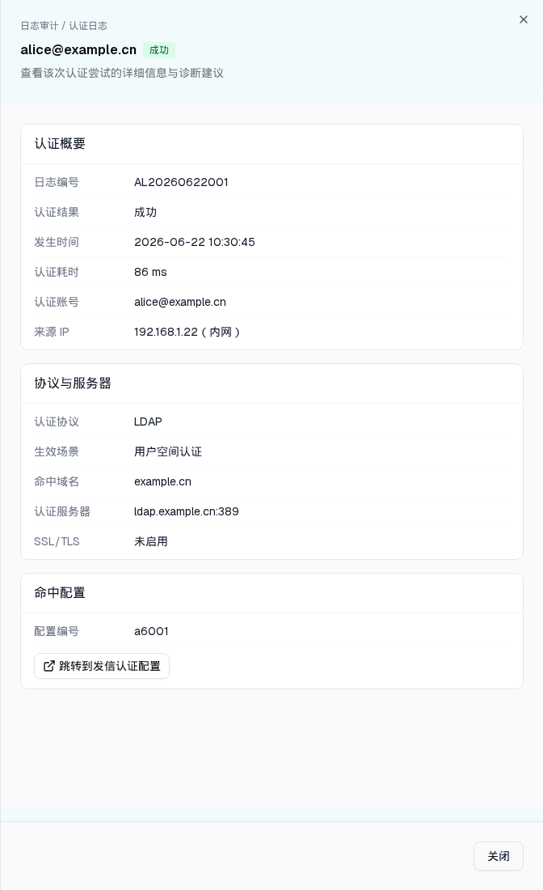

| 触发路径 | 层级0 → 列表行「查看」→ 右侧 Sheet 抽屉（sm:max-w-2xl） |

| 分区 | 字段 | 渲染 |
|---|---|---|
| 头部 | 面包屑「日志审计 / 认证日志」+ 标题（账号 + 结果徽标）+ 描述「查看该次认证尝试的详细信息与诊断建议」 | — |
| 认证概要 | 日志编号 / 认证结果 / 发生时间 / 认证耗时 / 认证账号 / 来源 IP | 耗时 {durationMs} ms；IP 显示为 IP（归属地） |
| 协议与服务器 | 认证协议 / 生效场景 / 命中域名 / 认证服务器（host:port）/ SSL/TLS | SSL：已启用 / 未启用 |
| 命中配置 | 配置编号 + 「跳转到发信认证配置」 | ExternalLink 图标 outline 按钮 → /admin/forwarding |
| 失败诊断 | 仅失败记录显示：失败原因 + 对应处置建议 | 红卡 border-red-200 bg-red-50 + AlertTriangle |
| 底部 | 「关闭」 | — |
7 类失败原因与处置建议的完整映射见 主文件 §4.2。
| 比对项 | demo 实际 DOM | 提取的 HTML | 是否一致 |
|---|---|---|---|
| 根节点 | [data-slot=sheet-content]（右侧抽屉，非 Modal） | 同 | 一致 |
| 后代节点数 | 67 | 67 | 一致 |
| 分区 | 4（认证概要 / 协议与服务器 / 命中配置 / 失败诊断） | 4 | 一致 |
| 失败诊断 | 仅失败记录渲染（本例为成功记录 → 不含该区） | 同 | 一致 |
| 跳转按钮 | 「跳转到发信认证配置」→ /admin/forwarding | 同 | 一致 |